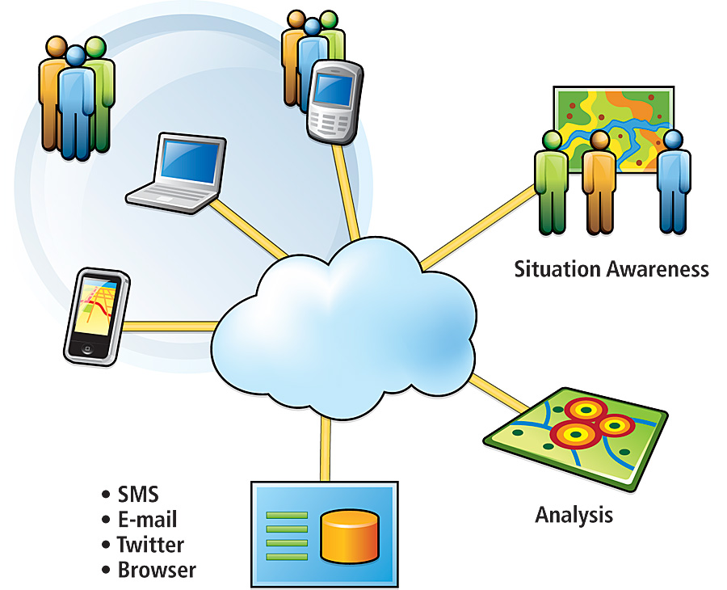

Digital Era
The geography of a place is layered with information that make up the area, such as buildings, experiences the people etc, these things bring the place to being and shape how we are able to locate them. The representation of places is important because this is how we know that a place exists and if invisible the narratives surrounding the place, the people and experiences become invisible however the question of who represents and how becomes significant. This then becomes a key means of control and power formation (Mark Graham, 2015)
Before the digital era information was scarce meaning it was only available to a few and was not being produced or received on a larger scale making information concentrated in specific areas. This then resulted to hegemonic methods of participation and representation meaning there became a dominant control over the conditions in which knowledge and information are produced and this control exerts economic, social, and political power (Mark Graham, 2015). The mediums of information during the pre-digital era were characterised by spiral inequalities (which in the digital age remains the same) as the global North played a huge role in producing, using, and controlling codified information. There has been a lot of change that has taken place with the availability of information with the new era of the internet. It has allowed many to access and become active participates of the internet producing information regardless of their geographic placement and introduced concepts such a freedom of expression. With this point of the internet allowing free speech there is a contradiction and challenge that comes into play as on the one hand the internet allows freedom of expression and on the other due to the excessive free flow of information there are restrictions put into place (Jorgensen, 2001). The public sphere which is the internet has been privatized and restricting access or production of information bringing us back to the question of whether it is true to say we are active participants of information production. There are still many people in different areas that are restricted and limited by geographical conditions.
The article analyses three categories that engage in a broad survey about geographies of key digital and internet-meditated processes and platforms.
The categories are:
-Geographies of access and enablement
-Geographies of participation
-Geographies of representation
The data that is presented in the article is said to be inaccurate as it is limited to the scale of the country which is problematic considering the sizes, borders and other factors that obscure information generation.Geographies of access and enablement
In order for us to partake in information generation we need to have access to the internet. In the article there is a figure that displays the datasets of internet users and the total population, and the size of each country is a representation of internet users the country has. The figure in the article shows the global north as highlighted with a bright red which means there is a higher penetration rate in those countries. We see how the north has an overwhelmingly larger penetration percentage than the south but even so the data can not be accurate as some areas within these countries with a high penetration rate don’t have access to the internet. What is also interesting to me with this data is the broadband affordability which was collected from the International Telecommunication Union. The data shown on the map tells us that the global south has higher broadband prices compared to the north so what exactly does this mean? In analysing this I have come to the conclusion that this finding is the reason as to why the internet users are fewer in those areas. It is possible that if the prices weren’t as high many places would also gain access to the internet and become active users. The article does however state that the prices aren’t so much the issue but rather the income of the people living in these areas.
Geographies of participation
In this category there are three variables that are used to indicate the content produced on the web (domain names), as a measure of contribution to software repositories (GitHub) and contribution to the worlds largest encyclopaedia (Wikipedia). This analysis of these indicators of content creation on the web aims to achieve common patterns of participation and ways that difference in platforms and purpose shape users’ involvement (Mark Graham, 2015). Domain names are useful in providing an understanding of participation as they give a location of the digital content. Figure 3 in the article displays distribution of domain names by country. The USA once again has the largest domain creation, with Europe following. The diagram gives a clear indication that information and internet construction and participation are focused on the western nations of the global north, other countries may have access however not as much access as the north. This content production analysis shows that a large internet population does not mean a large domain registration, and this is highlighted due to India and Chinas contributions.
The second variable analysed is the distributions of collaborative coding. GitHub is used by programmers to publish their code where others can download and use. It is the largest service that hosts code with millions of registered users and repositories. The data in figure 4 shows that the most GitHub commits are found in the global north with the south not producing or participating as much. It is proven again that countries with a low internet access do not engage with digital information and platforms like countries with a high penetration rate. Wikipedia is one of the largest open encyclopaedias that allows users to edit information with about 15% of internet users accessing it on a daily basis. Figure 5 shows similar results as the domain name and GitHub dataset where the Middle East and Africa come at the lower end of participation. We see how this tells us that participation on the internet requires accessibility.

Geographies of representation
This category is to show which parts of the world are represented or under-represented in a digital context. A different series of digital representations were considered. Google Search, OpenStreetMap and the Semantic Map. The information about search results was captured using results generated by Google after searching a country’s name. This data once again is not accurate as some web pages can mention a country without providing information about the country itself, however it is relevant and will help get an idea of how popular the country is based on the number of references found on Google. OpenStreetMap is the largest map of roads in the world because it is an open-source platform. Areas that have the most comprehensive road data shows areas that are properly represented geographically, and which countries are not. The data found shows that the global north has much more geographical representation compared to the south.
Conclusion
This article offered a broad scale survey that analysed the geographies of production and representation. Each of the categories of geographic information have shown how there is a broad pattern of unevenness throughout different platforms that facilitate representations of places (Mark Graham, 2015). It has become clearly evident that it is difficult to ask nor answer questions about information geography and the political economy of the information geography. The question still stands, of what is shown? To whom is it shown? And where is it shown. It is clear that there needs to be more inclusive contribution participation and access to information.
References
Azamfirei L, M. P., 2016. Knowledge is Power. Journal of critical care medicine , 2(2), pp. 65-66. Jorgensen, R. F., 2001. Internet and Freedom of expression, s.l.: Raoul Wallenberg Institute . Mark Graham, S. D. S. a. M. A. Z., 2015. Towards a study of information geographies: (im)mutable augumentations and mapping of the geographies information. Geo: Geography and environment , 2(1), pp. 88-105.